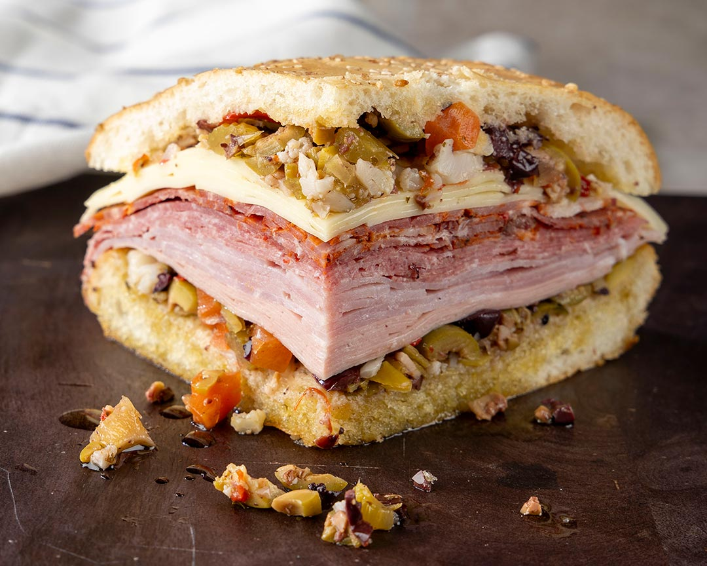

Muffaletta
Home

Delicious Homemade Italian Muffaletta
This Muffaletta Recipe is easy to make with a crusty loaf of Italian bread, layered with olives, and various meats and cheeses.
Ingredients
- 1 (1 pound) loaf fresh Italian bread
- 1/3 cup olive oil
- 1/3 cup grated Parmesan cheese
- 1 tablespoon dried basil
- 1 tablespoon dried oregano
- 8 oil-cured black olives, pitted and chopped
- 1/4 pound thinly sliced salami
- 1/4 pound thinly sliced ham
- 1/2 pound provolone cheese, sliced
- 1/4 pound mozzarella cheese, sliced
Directions
- Slice bread in half lengthwise. Drizzle olive oil on both sides. Sprinkle both sides with Parmesan cheese, basil, and oregano.
- On the bottom half, layer chopped black olives and chopped green olives, then the salami, ham, provolone, and mozzarella. Cover with top layer, and cut into 4 servings.